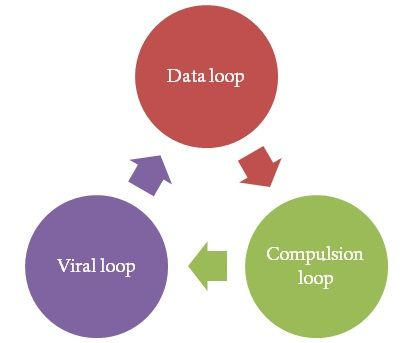

What are the Three Loops™?

My favorite visual to remind me of key retention metrics is this visual, which I call the Three Loops™. The first loop is the data loop, or adding more information. For instance, adding a photo or a list of favorite movies is contributing to Facebook’s data loop.
The second loop is the compulsion loop. This is about checking an application frequently. For example, Zynga’s mobile games ask users to check-in throughout the day to see how their farm has grown or to see how many new tokens they’ve generated.
The last loop is the viral loop. This is about inviting friends to try the service. For example, LinkedIn encourages users to invite more connections. Adding connections makes LinkedIn more valuable to the users; it’ll allow them to contact more people and see more profile information. And LinkedIn is thrilled that users will serve as ambassadors for their service, which would reduce their customer acquisition costs.
The Three Loops™ also point out how each loop reinforces the other. As a single user adds more personal information to a service, it compels their friends to check the service more often. When the friends see the new information, the friends find the service more valuable, pushing them to invite more contacts. And when new people join the service, they’ll add more data, starting the cycle anew.